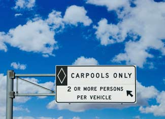

ISTOCKPHOTO/TIM MCCAIG
In many cities, not only do carpoolers save money on gas, but they can also get to work faster and bypass traffic congestion via dedicated express lanes for those who share rides.